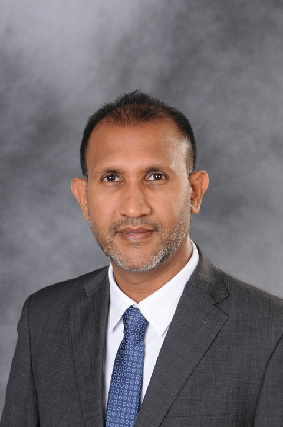

Navin Balkissoon, Roadmap Sequencer and Site Editor. Navin has over twenty years of experience in the telecommunications sector, most recently in the home and entertainment business, including TV subscription services. He owned the roadmap design, selecting the key initiatives that take Disney into the direct-to-consumer segment, and assembled and edited the site.The CEO of a major media company in Disney's position, who is seeking to diversify the company's revenue streams, reduce its exposure to seasonality and to shocks such as the Covid-19 pandemic, and further monetize an extensive content library. Transformations of this size are decided at board level, so the roadmap is written for the person who would take it there.
We deliberated over several companies before choosing Disney, and testing the options against each other's views was where we added most value. Disney won for two reasons: it is relatable to us as consumers of Disney+, and its transformation can be checked against Disney's own documents. Navin's twenty-plus years in telecommunications, most recently in TV subscription services, shaped the choice of initiatives that take Disney direct to consumer. Each dependency is marked as stated by Disney or as our inference, so a reader can challenge our reasoning separately from Disney's record. We named W2 the Initial-Market Launch because its 26.5 million subscriber figure covers six markets, not only the U.S. We treated C2 as a management structure change, because team structure should follow the company's strategy. Run initiatives carry success metrics the brief did not require, and R1 notes that the 2020 international rollout fell during the Covid-19 pandemic, one of the shocks our reader wants less exposure to.